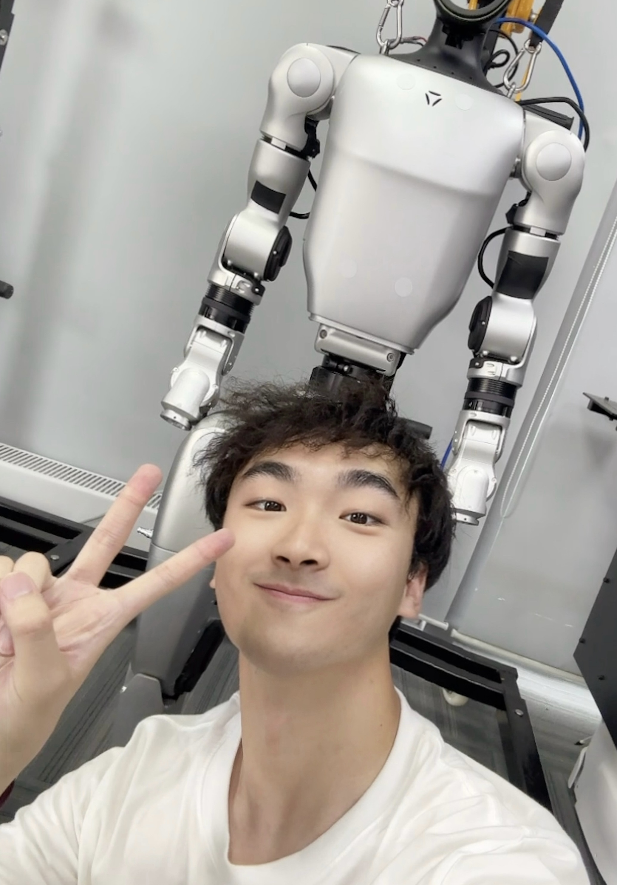
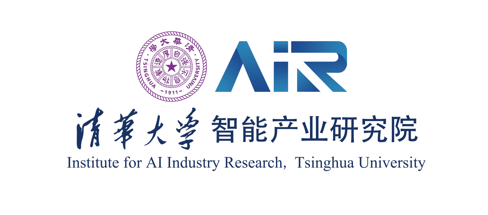
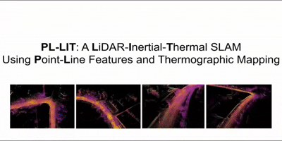
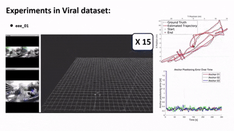

|

| LinkedIn |
GitHub | |
Jiawei Xia 「夏佳炜」 I am a master's student at the University of California, Berkeley.My research interests focus on Robotics. Currently, I am a research assistant at BAIR, advised by Prof. Koushil Sreenath and Prof. Masayoshi Tomizuka. Previously, I worked as a research intern at Institute for AI Industry Research, Tsinghua University and an Embodied AI Algorithm Intern at JD Explore Academy. And I enjoyed my time there. Before that, I received my B.S. in Beijing University of Chemical Technology. In my spare time, I enjoy photography, hiking, formula 1, and basketball. Email: xiaarrold [AT] berkeley.edu |
{kind=link}
News
|
{kind=link}
Education |

|
University of California, Berkeley, USA
Master of Mechanical Engineering (Robotics) 2026.8 - Present |

|
Beijing University of Chemical Technology, Beijing, China
Bachelor of Engineering, Mechanical Design and Its Automation (Robotics) 2022.9 - 2026.6 GPA: 3.7/4.0 Rank: Top 5% Former President of SIE Robotics Club. |
| Show more |
Research Experience |
|
|
Berkeley Artificial Intelligence Research (BAIR) Lab
Research Assistant | Sep 2026 – Present Faculty Advisors: Prof. Koushil Sreenath and Prof. Masayoshi Tomizuka Direct Mentors: Dr.Ruihai Wu and PHDing.Haoyi Niu Researching robotic dexterous manipulation skill learning and policy post training. |
|
|
JD Explore Academy, JD.com, Inc
Embodied AI Algorithm Intern | Mar 2026 – Jun 2026 Mentors: Dr. Lvsong Li and Dr. Jiangmiao Pang Developed data, training, and deployment pipelines for dual-arm manipulation, with a focus on 3D/4D World model and reinforcement learning post-training for robotic models. |
|
 |
Institute for AI Industry Research, Tsinghua University
Research Intern | Dec 2024 – Feb 2026 Advisors: Dr. Yongliang Shi and Dr. Weining Lu Developed Robust LiDAR-inertial-thermal SLAM and explored tactile and thermal sensing for robot imitation learning. |
|
|
Multi-agent Intelligence, Control, and Optimization Lab, George Mason University
Research Assistant | Sep 2024 – Feb 2025 Advisor: Dr. Yizhi Zhou Developed robust online UWB-anchor calibration for improved visual-inertial robot localization. |
| Show more |
Publications* : Equal contribution; †: Corresponding author(s) |

|
PRISM: PRior-guided Imagination Sampling in world Models
Yuhai Wang, Jiawei Xia, Rongxuan Zhou, Hu Xiao, Yongliang Shi, Du Jing, Yang Ye Under Review [Paper] [Website] We introduce PRISM, a simple, task-agnostic framework. Attached to a frozen JEPA encoder, a lightweight MLP predicts a Gaussian action prior. At plan time, a closed-form Product-of-Gaussians update integrates this prior to guide sampling based on confidence. |
|
 |
PL-LIT: A LiDAR-Inertial-Thermal SLAM system using Point-Line Features and Thermographic Mapping
Jiawei Xia, Yixiao Feng, Yongliang Shi†, Chao Gao†, Renjing Xu, Weining Lu, Bin Liang International Conference on Intelligent Robots and Systems 2026 (IROS) [Paper] [Video] We propose PL-LIT, a general LiDAR-Inertial-Thermal SLAM system. PL-LIT combines an online photometric calibration module with a deep neural network for point-line feature extraction. For state estimation, we design a tightly coupled LiDAR-Inertial-Thermal formulation within an Error-State Iterated Kalman Filter. In addition, PL-LIT builds a probabilistic thermal-intensity voxel map |
|
 |
CVIRO: A Consistent and Tightly-Coupled Visual-Inertial-Ranging Odometry on Lie Groups
Yizhi Zhou, Ziwei Kang, Jiawei Xia, Xuan Wang† International Conference on Intelligent Robots and Systems 2025 (IROS) [Paper] [Video] This paper proposes a consistent and tightly-coupled visual-inertial-ranging odometry system based on the Lie group. |

|
Robust Online Calibration for UWB-Aided Visual-Inertial Navigation with Bias Correction
Yizhi Zhou, Jie Xu, Jiawei Xia, Zechen Hu, Xuan Wang† International Conference on Intelligent Robots and Systems 2025 (IROS) [Paper] [Video] This paper proposes a robust online calibration method for UWB anchors in Visual-Inertial Navigation Systems. |
| Show more |
Research Projects |

|
ICRA 2026 WBCD Competition Vienna Champion 🏆 (Track 4)
HCLab (HKUST-GZ) Our team won first place in the Flexible Manipulation Track at ICRA 2026 WBCD Challenge, held in Vienna, Austria. Our approach is based on reinforcement learning fine-tuning the pre-trained Vision-Language-Action (VLA) mode. Ultimately, the model achieved a high success rate on the deformable/flexible clothing tasks. |

|
Conducted reinforcement learning-post training of robotics manipulation models
Jiawei Xia This project tried two ways about reinforcement learning post-training on robotic models. Firstly, we used the DAgger framework and positive/negative labeling to conduct rl post-training on vla model. Secondly, we leverage sparse task success rewards and an off-policy actor-critic framework to fine-tune policy in simulation environment. |

|
RoboCup@Home: Development of an Intelligent Home Service Robot Based on ROS
Jiawei Xia, Xianglei Dong, Wengcong Zhang, Boyi Zhang, Yutong Sun Developed an intelligent home service robot using a Kinova Gen2 arm and an Azure Kinect camera on ROS Noetic, with functions including guest reception and guidance, voice interaction, object recognition, and room cleaning. Used Gemini, SAM2, and GraspNet to estimate object pose and grasp objects. Controlled the arm using Actionlib and MoveIt. Applied FAST-LIO2 with Livox MID-360 for indoor mapping and localization. |

|
Training Unitree G1 to Imitate Kung Fu Behaviors
Yixiao Feng, Jiawei Xia Based on Kongfubot, used inverse kinematics retargeting and reinforcement learning to enable humanoid robots to imitate highly-dynamic behaviors (e.g., kungfu, dancing). Developed sim2sim in MuJoCo and sim2real with Unitree SDK, successfully deploying the framework on the Unitree G1 robot. |

|
RoboMaster University League 1v1 Combat Competition
Yutao Guo*, Hanhong Fu*, Jiawei Xia Used PnP to calculate the 3D position of the armor plate, and used Kalman filtering for tracking; The robot used four M3508 motors for the chassis and two M6020 motors for the turret, controlled via CAN communication and PID algorithms for current, speed, and position loops. Used feedforward PID to improve the gimbal drive and achieve gravity compensation. |

|
Simulation of an Intelligent Mineral Handling Robot
Xianglei Dong*, Jiawei Xia*, Wencong Zhang, Boyi Zhang ICRA 2024 RoboMaster Sim2real Challenge: In Habitat sim environment in docker provided by organizers, utilized ArUco for detecting poses of boxes, extracted the transformation and rotation matrices of box from solvePnP. Deployed an Extended Kalman Filter alongside an omnidirectional motion model for state estimation using sensor data, including IMU, odometry and depthimage to laserscan. |
| Show more |
Honours & Awards |
|
| Show more |
Leadership & Activities |
|
| Show more |
|
Website template adapted from here. |